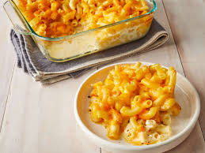

Baked Mac

A creamy baked mac and cheese recipe that is one of my favorites!
Ingredients:
1/4 cup finely chopped onion
2 tablespoons all-purpose flour
1/4 teaspoon ground black pepper
1 (8 ounce) package elbow macaroni
2 cups shredded sharp cheddar cheese
1 (8 ounce) package processed Amercan cheese, cut into strips
- Preheat the oven to 350 degrees F
- Melt butter in a medium saucepan over medium heat. Sauté onion for 2 minutes. Stir in flour and cook for 1 minute, stirring constantly.
- Then stir in milk,salt,mustard and pepper. Cook, stirring frequently, until mixture boils and thickens.
- Meanwhile, bring a pot of lightly salted water to a boil. Add macaroni and cook until al dente, 8 to 10 minutes; drain.
- Add Cheddar and American cheeses to milk mixture; stir until cheese melts.
- Combine cheese sauce and macaroni in a 2-quart baking dish; mix well.
- Bake in preheated oven until hot and bubbly, about 30 minutes. Let cool 10 minutes before serving.